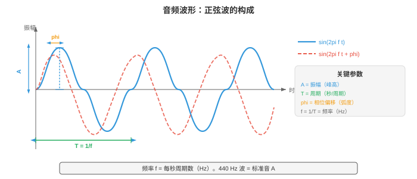
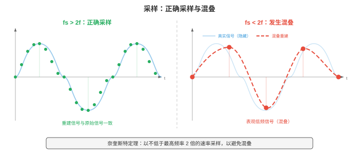
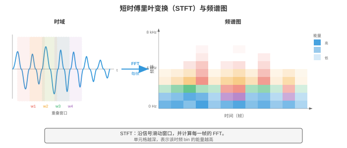
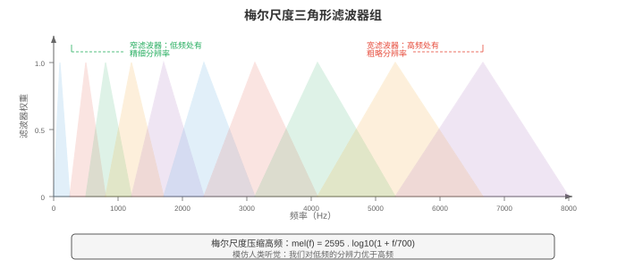
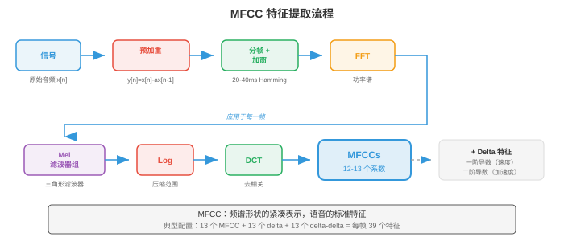

数字信号处理¶
数字信号处理（digital signal processing, DSP）将原始音频波形转化为机器学习模型可学习的结构化表示。本节涵盖声音物理、采样与量化、傅里叶变换（DFT、FFT）、频谱图、梅尔滤波器组、MFCC 和加窗，它们构成所有语音与音频 AI 的特征提取流程。
- 声音（sound）是在介质（空气、水、固体）中传播的压力波。振动物体（声带、吉他弦、扬声器振膜）推动和拉动空气分子，形成高压的压缩区与低压的稀疏区交替出现的区域。
大白话
声音不是物体从你身边飞来，而是物体把周围空气一层层推开、拉回，压力变化一路传到耳朵。
- 这些压力变化在空气中以约 343 m/s 向外传播，到达耳朵后使鼓膜振动，并被转换为神经信号。
大白话
耳朵先接住空气的微小振动，再把它翻译成大脑能识别的神经信号。
- 可以把声音想象成向静止池塘中投下一块石头：石头是振动源，涟漪是压力波，水面上随波起伏的软木塞则是对到达波作出响应的麦克风或鼓膜。
大白话
这个类比的重点是：波在传播，空气分子本身只是在原地附近来回振动，就像软木塞不会跟着水波游到池边。
- 软木塞上下起伏的高度是振幅（amplitude），每秒起伏的次数是频率（frequency），而波到达时它从起伏顶部还是底部开始，则是相位（phase）。
大白话
振幅管声音有多强，频率管声音有多高，相位管不同波在时间上有没有对齐。
- 波形（waveform）是压力（或麦克风将声音转换为电信号后的电压）随时间变化的图。最简单的波形是纯音（pure tone），即单一正弦波：
大白话
这条式子描述最干净的单音：把音量、音高和起始位置三个旋钮设好，就能画出整条波形。
-
其中：
大白话
这三个参数分别对应声音的强弱、高低和起始时刻，合起来就完整规定了一个纯音。
-
\(A\) 是振幅（相对零点的峰值偏离量，决定响度），
大白话
\(A\) 越大，波上下摆得越高，通常听起来也越响。
-
\(f\) 是以 Hz 为单位的频率（每秒周期数，决定音高），
大白话
\(f\) 表示一秒振动几次；次数越多，音高通常越高。
-
\(\phi\) 是以弧度表示的相位（波的时间偏移）。
大白话
\(\phi\) 只是在说明波从循环的哪一处开始，不改变它本身的音高或强度。
-
-
周期（period）为 \(T = 1/f\)，即一个完整循环持续的时间。
大白话
频率和周期互为倒数：振得越快，每次完整起伏花的时间就越短。

- 振幅（amplitude）决定感知到的响度。振幅加倍，功率变为四倍（因为功率与振幅平方成正比）。
大白话
把波拉高两倍不只是“多一点声音”，其物理能量会变成四倍。
- 人耳可听的振幅范围极大，因此使用对数尺度，即分贝（decibel, dB）。声压级为：
大白话
分贝把极大的振幅范围压缩成容易比较的数值，因此 60 dB 不是 30 dB 的两倍响。
- 其中 \(A_\text{ref}\) 是参考振幅（通常为听阈，\(20 \mu\text{Pa}\)）。耳语约为 30 dB，正常交谈约为 60 dB，摇滚演唱会约为 110 dB。每增加 6 dB，振幅大致加倍；每增加 10 dB，感知响度大致加倍。这里的对数与第 03 章中的函数相同。
大白话
dB 是相对参考值的比例尺；数字只多一点，真实振幅和主观听感都可能差很多。
- 频率（frequency）决定音高。低频（20-250 Hz）听起来低沉，高频（2000-20000 Hz）听起来明亮。人类听觉范围约为 20 Hz 至 20 kHz。音乐会标准音 A 为 440 Hz。频率加倍，音高升高一个八度（octave）。
大白话
频率像振动的节拍：每秒震动越密，听起来越尖；频率翻倍，人耳会觉得跨过一个八度。
- 大多数自然声音并非纯音，而是许多频率的复杂混合。这就是钢琴和小提琴弹奏同一音符时听感不同的原因：它们有相同的基频（fundamental frequency），但其谐波（harmonics）（基频的整数倍）及各自相对振幅不同，形成不同的音色（timbre）。
大白话
基频决定你听到哪个音，谐波的配方决定它像钢琴、小提琴还是人声，这个配方就是音色。
- 相位（phase）决定波从其循环中的何处开始。振幅和频率相同、相位不同的两列波可以发生建设性干涉（相位对齐，振幅相加），也可以发生破坏性干涉（相位相反，振幅抵消）。
大白话
两列波峰对波峰会互相放大，波峰对波谷会互相抵消，所以相位会影响它们合起来的结果。
- 相位对立体声音频和波束形成至关重要；但在许多语音处理流程中，它大多被舍弃，因为人类对音高和音色的感知基本不受相位影响。
大白话
要判断声音来自哪个方向时相位很重要；只做语音识别时，模型通常用频谱就已足够。
- 真实世界中的音频信号是时间的连续（continuous）函数，而计算机处理离散数值。采样（sampling）通过以固定时间间隔测量信号值，将连续信号转换为离散序列。
大白话
麦克风记录的是连续变化，电脑只能存一串数字；采样就是按固定间隔给这条连续曲线拍快照。
- 采样率（sample rate） \(f_s\) 是每秒测量的次数。CD 音频使用 \(f_s = 44{,}100\) Hz；电话通信使用 8000 Hz；现代语音模型通常使用 16000 Hz。
大白话
采样率越高，每秒留下的声音快照越多，能保留的高频细节也越多，但文件和计算量更大。
- 奈奎斯特-香农采样定理（Nyquist-Shannon sampling theorem）指出，当且仅当采样率至少为信号所含最高频率的两倍时，连续信号才能由其样本完全重建：
大白话
想把最高频率录对，每个周期至少要取两个点；采得更稀，电脑会把高音误认成别的低音。
- 频率 \(f_s / 2\) 称为奈奎斯特频率（Nyquist frequency）。若信号包含高于奈奎斯特频率的成分，它们会折叠回有效范围，伪装成错误的低频成分；这种现象称为混叠（aliasing）。混叠不可逆：一旦发生，便无法由样本恢复原始信号。
大白话
超过采样能力的高音会被录成假的低音，而且原始高音已经丢失，后面再聪明的算法也还原不出来。
- 混叠的日常类比是电影中的车轮倒转效应：略高于帧率转动的车轮看起来会缓慢反向转动，因为相机对旋转采样不足。在音频中，以 16 kHz 采样的 15 kHz 音调（\(f_\text{Nyquist} = 8\) kHz）会混叠为 \(16 - 15 = 1\) kHz，成为完全不同的音高。
大白话
电影里的车轮倒转和录音里的假低音是同一个错误：观察得太慢，快速变化被看错了。

- 为防止混叠，采样前使用抗混叠滤波器（anti-aliasing filter）（低通滤波器）去除所有高于 \(f_s/2\) 的频率。这由模数转换器（ADC）硬件在信号数字化前完成。
大白话
正确做法不是先录下来再补救，而是在进电脑前先切掉设备录不下来的高频。
- 量化（quantisation）将每个连续值样本映射到有限个量化级中最接近的值。一个 \(n\) 位量化器有 \(2^n\) 个量化级。CD 音频使用 16 位量化（\(2^{16} = 65{,}536\) 个量化级）；电话通信常使用 8 位量化及 \(\mu\) 律或 A 律压扩（companding）（一种给小振幅分配更多量化级的非线性映射，以匹配人类感知）。量化会引入量化噪声（quantisation noise），这是一种舍入误差，其方差为 \(\Delta^2/12\)，其中 \(\Delta\) 是量化级之间的步长。
大白话
量化是把连续高度四舍五入到有限格子里；位数越多格子越密，误差越小，压扩则把更多精度留给人耳更敏感的小声音。
- 时域分析（time-domain analysis）直接从波形中提取特征，不将其转换到其他域。这些特征简单、计算快，能捕捉信号的基本性质。
大白话
时域分析直接盯着波形本身，计算便宜，适合快速判断声音强弱、粗略频率和周期性。
- 由 \(N\) 个样本组成的帧的能量（energy）衡量整体响度：
大白话
把一小段波形每个数平方后加起来，就是它有多“有力”；声音越大，能量通常越高。
- 语音片段能量高，静音能量低。能量就是第 01 章的平方 \(\ell_2\) 范数应用于信号向量。
大白话
能量可以用来粗分哪里有人说话、哪里接近安静，但它本身不能告诉你说了什么。
- 过零率（zero-crossing rate, ZCR）统计信号在一帧内改变符号的频率：
大白话
过零率就是波形穿过中线有多频繁，波抖得越快，穿过去的次数通常越多。
- 高 ZCR 表示高频内容或噪声；低 ZCR 表示低频或有声语音（声带以周期方式振动）。ZCR 是粗略的频率估计器：频率为 \(f\) Hz 的纯音每秒过零 \(2f\) 次。
大白话
ZCR 高不一定就是高音，也可能是噪声；它只能给出很粗的线索，不能替代完整频谱分析。
- 自相关（autocorrelation）衡量一个信号与其延迟副本有多相似：
大白话
把一段波形向后挪一点再和原来比较，若仍很像，说明它有重复的周期结构。
- 在延迟 \(k = 0\) 处，自相关等于能量。对周期信号而言，自相关在等于周期及其倍数的延迟位置出现峰值。这是进行音高检测（pitch detection）的标准技术：寻找 \(R[k]\) 在 \(k=0\) 之后的第一个显著峰，其音高为 \(f_s / k_\text{peak}\)。自相关与第 01 章的点积有关：\(R[k]\) 是信号与其平移 \(k\) 位后的版本之间的点积。
大白话
找到波形“隔多久又和自己最像”，就找到了一个振动周期；用采样率除以这个间隔即可得到音高。
- 频域分析（frequency-domain analysis）揭示信号的频谱内容，即波形中看不见的信息。核心工具是离散傅里叶变换（Discrete Fourier Transform, DFT），它将含 \(N\) 个样本的信号分解为 \(N\) 个复数频率分量：
大白话
频域分析不再问波形每一刻多高，而是问它由哪些高低不同的振动混合而成。
- 每个 \(X[k]\) 都是复数，其幅值 \(|X[k]|\) 给出频率 \(f_k = k \cdot f_s / N\) Hz 分量的振幅，相位 \(\angle X[k]\) 给出相位偏移。DFT 是从时域基（单位冲激）到频域基（复指数）的换基，直接应用了第 02 章的基概念。DFT 可写成矩阵乘法 \(\mathbf{X} = W \mathbf{x}\)，其中 \(W\) 是 \(N \times N\) 的 DFT 矩阵，其元素为 \(W_{kn} = e^{-j2\pi kn/N}\)。
大白话
DFT 就是换一副坐标眼镜：原来看到的是时间上的起伏，换后看到的是每种频率各占多少。
- 快速傅里叶变换（Fast Fourier Transform, FFT）是一种算法，它通过递归地将问题拆成偶数索引和奇数索引子问题（Cooley-Tukey 算法），以 \(O(N \log N)\) 次操作计算 DFT，而非朴素方法所需的 \(O(N^2)\) 次。这一加速使实时频谱分析成为现实。FFT 是整个计算领域最重要的算法之一。
大白话
FFT 算出的答案和 DFT 一样，只是通过拆分重复计算，把大问题快得多地完成，实时音频才做得动。
- 功率谱（power spectrum） \(|X[k]|^2\) 显示能量在各频率间的分布；幅度谱（magnitude spectrum） \(|X[k]|\) 显示振幅。绘制它们可揭示哪些频率占主导：元音在基频整数倍处有强谐波；擦音（如 “s”）有宽广的高频能量。
大白话
频谱像声音的配料表：哪些频率高峰突出，就能解释它为什么像元音、擦音或乐器。
- 频谱图（spectrogram）是信号频率内容随时间变化的可视化表示。计算方法是将信号切成重叠的短帧，对每帧计算 FFT，再将所得幅度谱并排堆叠。横轴是时间，纵轴是频率，每个点的颜色（或亮度）表示幅度。频谱图是音频处理最重要的可视化方式。
大白话
频谱图相当于声音的动态热力图：什么时候出现了哪些频率，一眼就能看出。

- 梅尔尺度（mel scale）是反映人类如何感知音高的感知频率尺度。人类将相等的频率比感知为相等的音高间隔（正如我们将相等的强度比感知为相等的响度间隔）。在约 1000 Hz 以下，梅尔尺度近似线性；在 1000 Hz 以上，它近似对数：
大白话
梅尔尺度不按物理 Hz 均匀切分，而是按人耳觉得“音高差不多”的方式重新排刻度。
- 其反函数为 \(f = 700(10^{m/2595} - 1)\)。梅尔尺度解释了音乐半音为何在对数频率轴上等距：A4（440 Hz）至 A5（880 Hz），以及 A5 至 A6（1760 Hz），尽管 Hz 间隔分别是 440 与 880，听起来都是“升高一个八度”。
大白话
人耳更在意频率翻了几倍，而不是绝对多了多少 Hz，所以越高音区，同样的听感间隔对应越大的 Hz 差。
- 梅尔滤波器组（mel filterbank）是一组三角形带通滤波器，它们在梅尔尺度上均匀分布。每个滤波器覆盖一个频带，并将该频带内的频谱能量相加，产生一个数值。典型语音系统使用 40-80 个梅尔滤波器。低频滤波器较窄（在人耳敏感处有较高频率分辨率），高频滤波器较宽（在人耳较不敏感处有较低分辨率）。这模仿了人类耳蜗的频率分辨率。
大白话
梅尔滤波器组把密密麻麻的频谱格子压成几十个更符合听觉的频带，低音区看得更细，高音区看得更粗。

- 梅尔频率倒谱系数（Mel-Frequency Cepstral Coefficients, MFCCs）是经典的语音与音频特征表示。它们将梅尔频谱压缩成少量互不相关的系数，这些系数捕捉频谱包络的形状（编码声道构形，因而也编码语音单位身份），同时舍弃精细频谱细节（编码音高与相位）。
大白话
MFCC 把一帧复杂声音浓缩成少数数字，重点保留“声道形状像什么”，故意弱化精确音高和相位。
- MFCC 流程：
大白话
MFCC 是一条固定的压缩流水线：先把声音切小、看频率，再按听觉规则浓缩成少量特征。
-
预加重（pre-emphasis）：应用一阶高通滤波器 \(y[n] = x[n] - \alpha x[n-1]\)（通常 \(\alpha = 0.97\)），提升被声道衰减的高频。
大白话
预加重先把原本较弱的高频抬起来，避免低频声音把特征几乎全部占满。
-
分帧（framing）：将信号切成重叠帧（通常帧长为 25 ms，帧移为 10 ms）。
大白话
语音会随时间变，不能整段一次分析；切成很短且重叠的小片段，才可认为每片近似稳定。
-
加窗（windowing）：将每帧乘以窗函数（Hamming 窗），以减少频谱泄漏（见下文）。
大白话
加窗让帧的两端平滑淡出，防止硬切开波形时凭空制造频率成分。
-
FFT：计算每个加窗帧的功率谱。
大白话
FFT 把每个短片段从波形变成频率能量表。
-
梅尔滤波器组（mel filterbank）：将三角形梅尔滤波器组应用于功率谱，得到梅尔频带能量。
大白话
这一步把机器算出的细频率格子汇总成人耳更关心的频带。
-
对数（log）：对梅尔频带能量取对数。对数压缩动态范围，并将（频谱分量的）乘法转为加法，符合人类响度感知。
大白话
对数把特别强和特别弱的能量差距压小，数值更稳定，也更接近耳朵的听感。
-
DCT：对对数梅尔能量应用离散余弦变换（Discrete Cosine Transform）。DCT 对梅尔频带去相关（相邻频带高度相关），并将能量压缩到前几个系数中。保留前 13 个系数（MFCC-0 至 MFCC-12）。
大白话
DCT 把彼此相似的频带信息重新整理，把主要形状集中到前几个数字，方便经典模型使用。

- 第 7 步的 DCT 本质上是“频谱的傅里叶变换”（因此倒谱（cepstrum）一词是 spectrum 的字母重排）。低阶倒谱系数捕捉宽泛的频谱形状（称为共振峰（formants）的声道共振），高阶系数捕捉精细频谱细节（音高谐波）。只保留前 13 个系数时，我们保留共振峰信息，舍弃音高细节。
大白话
前几个倒谱系数描述嘴巴和声道塑造出的整体轮廓，后面的细碎系数更多反映音高细节，所以常被舍弃。
- Delta 与 delta-delta MFCC（MFCC 的一阶和二阶时间导数，通过相邻帧间的有限差分计算）捕捉频谱形状的动态变化，加入时间上下文。完整的 MFCC 特征向量通常为 39 维：13 个静态系数 + 13 个 delta + 13 个 delta-delta。
大白话
静态 MFCC 只看这一帧长什么样，delta 看它在怎么变，delta-delta 看变化是在加速还是减速。
- 现代神经网络模型（第 06 章）已大多用学习到的特征替代 MFCC：对数梅尔频谱图（第 6 步输出，跳过 DCT）是深度学习 ASR 与音频分类的标准输入。模型会自行学习去相关。然而，MFCC 对低资源环境、经典机器学习流程，以及理解信号处理基础仍很重要。
大白话
深度模型通常保留更多原始梅尔信息自己学习特征；MFCC 更小更规整，在传统模型和资源受限场景仍有价值。
- 加窗（windowing）是在计算 FFT 前，将信号帧乘以平滑窗函数的过程。若不加窗，FFT 会假设该帧无限重复；帧的突然开始和结束会制造人为不连续性，使能量扩散到所有频率，形成称为频谱泄漏（spectral leakage）的伪影。
大白话
直接把声音硬切一段会在边缘产生假跳变；加窗像把两端慢慢淡出，避免这些假跳变污染频谱。
- 矩形窗（rectangular window）：\(w[n] = 1\)，对所有 \(n\)。不做渐变，泄漏最大，但主瓣最宽（对给定帧长有最佳频率分辨率）。实践中很少使用。
大白话
矩形窗就是完全不处理边缘，频率分得细，却很容易把能量漏到不该有的频率上。
- Hamming 窗（Hamming window）：\(w[n] = 0.54 - 0.46 \cos(2\pi n / (N-1))\)。在边缘渐变至接近零，大幅减少泄漏。它是语音处理的标准选择。
大白话
Hamming 窗在两端留一点余量、平滑减弱，因此是语音处理中稳妥的默认选择。
- Hann 窗（Hann window）（也称 Hanning 窗）：\(w[n] = 0.5 - 0.5 \cos(2\pi n / (N-1))\)。在边缘渐变到恰好为零。它与 Hamming 窗很相似，但旁瓣抑制略好。
大白话
Hann 窗把两端压到正好为零，和 Hamming 很像，只是在泄漏与分辨率之间取了略不同的平衡。
- Blackman 窗（Blackman window）：\(w[n] = 0.42 - 0.5 \cos(2\pi n / (N-1)) + 0.08 \cos(4\pi n / (N-1))\)。旁瓣抑制更好，但主瓣更宽（频率分辨率更差）。在旁瓣伪影特别成问题时使用。
大白话
Blackman 窗更狠地压制旁边的泄漏，但代价是相近频率更难分开，适合更怕伪影的任务。
- 存在一项基本权衡：泄漏较少的窗有较宽主瓣，意味着它们无法分辨两个间隔很近的频率。这就是频谱分辨率与泄漏权衡（spectral resolution vs. leakage tradeoff），它是第 03 章不确定性原理的结果。
大白话
没有一种窗两头都占：想少泄漏，就得接受相近音高更难分辨。
- 重叠相加（overlap-add, OLA）是从加窗、处理后的帧中重建信号的技术。帧彼此重叠（通常 50-75%），处理后将加窗输出相加。若窗与重叠量选择正确（如重叠 50% 的 Hann 窗），重叠窗口会相加为常数，从而实现完美重建。这对任何基于帧的音频修改（降噪、变调、时间伸缩）都必不可少。
大白话
音频被切成重叠小片后，处理完再像拼瓷砖一样叠回去；窗和重叠配得对，接缝就不会产生忽大忽小。
- 短时傅里叶变换（Short-Time Fourier Transform, STFT）是频谱图背后的形式化框架。它对信号的每个加窗帧应用 DFT：
大白话
STFT 就是把声音切成一帧帧、各自加窗做 FFT，所以能同时保留“何时发生”和“有什么频率”。
- 其中 \(m\) 是帧索引，\(H\) 是帧移（连续帧之间的样本数），\(w[n]\) 是窗函数，\(N\) 是 FFT 大小。输出是一个二维复数矩阵，即信号的时频表示（time-frequency representation）。
大白话
STFT 输出是一张时间乘频率的表，行或列对应不同时间片和频率，里面还保留幅度与相位信息。
- STFT 体现了一项基本的时频权衡（time-frequency tradeoff）：
大白话
一段分析窗口不可能同时无限精确地知道“频率多接近”和“变化发生在哪一刻”，必须选侧重哪边。
-
长帧（较大 \(N\)）：频率分辨率高（可区分间隔很近的频率），但时间分辨率差（无法精确定位频率何时改变）。
大白话
长帧像长时间观察一个声音，能分清很接近的音高，却会把短暂变化的位置看模糊。
-
短帧（较小 \(N\)）：时间分辨率高，但频率分辨率差。
大白话
短帧能抓住变化瞬间，却不容易分辨两条靠得很近的频率线。
-
时间分辨率与频率分辨率的乘积有下界：\(\Delta t \cdot \Delta f \geq \frac{1}{4\pi}\)。这就是加伯极限（Gabor limit），是信号处理对应物理中海森堡不确定性原理的版本。
大白话
这条下界说明上面的取舍不是工具不够好，而是信号本身就存在的限制。
- 典型语音 STFT 参数为：25 ms 帧长（16 kHz 时 \(N = 400\)）、10 ms 帧移（\(H = 160\)）、Hamming 窗、512 点 FFT（从 400 零填充而来，以提高效率并使频谱插值更平滑）。
大白话
25 ms 和 10 ms 是语音里的常用折中：一帧内发音变化不大，又能每秒更新很多次。
- 滤波（filtering）通过放大某些频率、衰减其他频率来改变信号的频率内容。滤波器（filter）是接收输入信号并产生输出信号的系统。滤波器由其频率响应（frequency response） \(H(f)\) 表征，它描述施加到各频率的增益和相位偏移。
大白话
滤波器像声音的筛子：想保留的频率放行，想去掉的频率压低。
- 低通滤波器（low-pass filter）：让低于截止频率 \(f_c\) 的频率通过，衰减高于它的频率。它会移除高频噪声和细节。采样前的抗混叠滤波器就是低通滤波器。
大白话
低通只留低音，能削掉嘶声和过高细节，也是在采样前防混叠的第一道关。
- 高通滤波器（high-pass filter）：让高于 \(f_c\) 的频率通过，衰减低于它的频率。它会移除低频隆隆声和直流偏置。MFCC 提取中的预加重滤波器（\(y[n] = x[n] - 0.97 x[n-1]\)）是简单的高通滤波器。
大白话
高通反过来削掉低沉隆隆声和直流偏移，让较清晰的高频部分留下来。
- 带通滤波器（band-pass filter）：让范围 \([f_1, f_2]\) 内的频率通过，衰减范围外的频率。梅尔滤波器组的每个三角形都是带通滤波器。
大白话
带通只挑一个频率区间通过，像收音机调到某个频道附近。
- 带阻（陷波）滤波器（band-stop (notch) filter）：衰减特定的窄频率范围。用于移除特定干扰（如 50/60 Hz 电力线嗡声）。
大白话
陷波滤波器专门挖掉一条窄频率线，适合处理电流嗡声这类明确的干扰。
- 有限冲激响应（Finite Impulse Response, FIR）滤波器将每个输出样本计算为当前及过去输入样本的加权和：
大白话
FIR 的当前输出只把现在和过去的一小段输入按权重混合，不会把自己的旧输出再反馈回来。
- 权重 \(b_k\) 是滤波器系数（filter coefficients）（也称抽头（taps））。滤波器阶数为 \(M\)。FIR 滤波器始终稳定（输出不会发散），并可设计为完全线性相位（所有频率延迟相同，保留波形形状）。其缺点是，获得尖锐截止需要许多抽头（较高的 \(M\)），从而增加计算量。输出是输入与系数向量的卷积，正是第 06 章的一维卷积运算。
大白话
FIR 的优点是稳定且不容易扭曲波形；缺点是想把频率切得很利，需要很多系数，计算会变重。
- 无限冲激响应（Infinite Impulse Response, IIR）滤波器使用反馈：输出既取决于过去输入，也取决于过去输出：
大白话
IIR 除了看旧输入，还把旧输出送回去继续影响现在，因此同样效果能用更少系数实现。
- 反馈项 \(a_k\) 创建递归结构，其冲激响应在理论上持续无限长。IIR 滤波器以远少于 FIR 滤波器的系数实现尖锐截止，但可能不稳定（若传递函数的极点位于单位圆外，输出将无界增长，这是 \(z\) 变换中的概念）。它们还有非线性相位，可能扭曲波形形状。经典滤波器设计（Butterworth、Chebyshev、椭圆滤波器）都是 IIR。
大白话
反馈让 IIR 很省参数，但设计不好会不断放大自己而失控，也可能让不同频率延迟不同、改变波形形状。
- 离散时间滤波器的传递函数（transfer function）通过 \(z\) 变换得到：
大白话
传递函数把滤波器的全部规则压成一个分式，方便从数学上直接分析哪些频率会被放大或削弱。
- 分子的根称为零点（zeros），分母的根称为极点（poles）。极零图完整描述滤波器行为。接近单位圆的极点会放大附近频率；接近单位圆的零点会衰减它们。FIR 滤波器只有零点（分母为 1）。这与第 02 章和第 03 章的特征值和求根概念相连。
大白话
在极零图里，极点像把附近频率往上推，零点像把附近频率压下去；它能直观看出滤波器会偏爱什么声音。
- 卷积定理（convolution theorem）：时域中的卷积等于频域中的逐元素乘法。这意味着滤波既可通过直接将信号与滤波器冲激响应卷积完成，也可通过将它们的傅里叶变换相乘并逆变换结果完成。对长滤波器，频域方法（使用 FFT）更快：\(O(N \log N)\) 对比 \(O(NM)\)。
大白话
时域里一步步做卷积很慢时，可以先变到频域逐项相乘，再变回来，长滤波器通常会快得多。
- 逆 STFT（inverse STFT, iSTFT）从其 STFT 表示重建时域信号。这对任何在频域修改音频的系统（降噪、源分离、语音转换）都至关重要。重建使用重叠相加：
大白话
iSTFT 先把每帧频谱变回短波形，再按原来的重叠位置拼回去，并用分母补偿窗口造成的音量变化。
- 分母为窗的重叠做归一化；当合成窗与分析窗匹配且重叠充分时，确保完美重建。
大白话
只要窗和重叠规则配对正确，分析后什么都不改再重建，应该能得到原来的声音。
- 语音 DSP 链总结（Summary of the DSP chain for speech）：原始音频以 16 kHz 采样、预加重、切分为帧长 25 ms、帧移 10 ms 的 Hamming 加窗帧；每帧进行 FFT、通过梅尔滤波器组、进行对数压缩，之后要么保留为对数梅尔特征（用于神经网络模型），要么经 DCT 转换为 MFCC（用于经典模型）。整条链将一维时域信号转换为适合下游机器学习的二维时频表示，这将是第 02 节的主题。
大白话
整条 DSP 链的目的很简单：把难直接处理的原始波形，变成模型更容易从中学到语言和声音规律的二维特征图。
编程任务（使用 CoLab 或 notebook）¶
-
生成正弦波，以不同采样率采样，并演示混叠。绘制连续信号、正确采样版本与欠采样（混叠）版本。
import jax.numpy as jnp import matplotlib.pyplot as plt # Parameters f_signal = 5.0 # 5 Hz signal duration = 1.0 # 1 second # "Continuous" signal (very high sample rate) t_cont = jnp.linspace(0, duration, 10000) x_cont = jnp.sin(2 * jnp.pi * f_signal * t_cont) # Properly sampled (fs = 50 Hz, well above Nyquist = 10 Hz) fs_good = 50 t_good = jnp.arange(0, duration, 1.0 / fs_good) x_good = jnp.sin(2 * jnp.pi * f_signal * t_good) # Under-sampled (fs = 7 Hz, below Nyquist = 10 Hz) -> aliasing fs_bad = 7 t_bad = jnp.arange(0, duration, 1.0 / fs_bad) x_bad = jnp.sin(2 * jnp.pi * f_signal * t_bad) # The aliased frequency: |f_signal - fs_bad| = |5 - 7| = 2 Hz f_alias = abs(f_signal - fs_bad) x_alias_cont = jnp.sin(2 * jnp.pi * f_alias * t_cont) fig, axes = plt.subplots(3, 1, figsize=(12, 9)) # Plot 1: original signal axes[0].plot(t_cont, x_cont, color='#3498db', linewidth=1.5, label=f'Original {f_signal} Hz') axes[0].set_title(f'Original {f_signal} Hz Signal') axes[0].set_xlabel('Time (s)'); axes[0].set_ylabel('Amplitude') axes[0].legend(); axes[0].grid(True, alpha=0.3) # Plot 2: proper sampling axes[1].plot(t_cont, x_cont, color='#3498db', linewidth=1, alpha=0.4, label='Original') axes[1].stem(t_good, x_good, linefmt='#27ae60', markerfmt='o', basefmt='k-', label=f'Sampled at {fs_good} Hz (above Nyquist)') axes[1].set_title(f'Proper Sampling: fs = {fs_good} Hz > 2 x {f_signal} Hz') axes[1].set_xlabel('Time (s)'); axes[1].set_ylabel('Amplitude') axes[1].legend(); axes[1].grid(True, alpha=0.3) # Plot 3: aliased sampling axes[2].plot(t_cont, x_cont, color='#3498db', linewidth=1, alpha=0.4, label='Original') axes[2].stem(t_bad, x_bad, linefmt='#e74c3c', markerfmt='o', basefmt='k-', label=f'Sampled at {fs_bad} Hz (below Nyquist)') axes[2].plot(t_cont, x_alias_cont, color='#f39c12', linewidth=1.5, linestyle='--', label=f'Aliased signal appears as {f_alias} Hz') axes[2].set_title(f'Aliased Sampling: fs = {fs_bad} Hz < 2 x {f_signal} Hz') axes[2].set_xlabel('Time (s)'); axes[2].set_ylabel('Amplitude') axes[2].legend(); axes[2].grid(True, alpha=0.3) plt.tight_layout(); plt.show() -
计算并可视化由多个正弦波构成的信号的 FFT。展示幅度谱，并识别其组成频率。
import jax.numpy as jnp import matplotlib.pyplot as plt # Create a composite signal: 220 Hz + 440 Hz + 880 Hz (A3 + A4 + A5) fs = 8000 # 8 kHz sample rate duration = 0.1 # 100 ms t = jnp.arange(0, duration, 1.0 / fs) n_samples = len(t) # Three frequency components with different amplitudes x = 1.0 * jnp.sin(2 * jnp.pi * 220 * t) + \ 0.6 * jnp.sin(2 * jnp.pi * 440 * t) + \ 0.3 * jnp.sin(2 * jnp.pi * 880 * t) # Compute FFT X = jnp.fft.fft(x) freqs = jnp.fft.fftfreq(n_samples, d=1.0 / fs) magnitude = jnp.abs(X) / n_samples # normalise # Only plot positive frequencies pos_mask = freqs >= 0 freqs_pos = freqs[pos_mask] mag_pos = magnitude[pos_mask] * 2 # double to account for negative freq energy fig, axes = plt.subplots(2, 1, figsize=(12, 7)) # Time domain axes[0].plot(t * 1000, x, color='#3498db', linewidth=1) axes[0].set_title('Composite Signal: 220 Hz + 440 Hz + 880 Hz') axes[0].set_xlabel('Time (ms)'); axes[0].set_ylabel('Amplitude') axes[0].grid(True, alpha=0.3) # Frequency domain axes[1].plot(freqs_pos, mag_pos, color='#e74c3c', linewidth=1.5) axes[1].set_title('Magnitude Spectrum (FFT)') axes[1].set_xlabel('Frequency (Hz)'); axes[1].set_ylabel('Magnitude') axes[1].set_xlim(0, 1500) # Annotate peaks for f_peak, amp in [(220, 1.0), (440, 0.6), (880, 0.3)]: axes[1].annotate(f'{f_peak} Hz', xy=(f_peak, amp), fontsize=10, ha='center', va='bottom', color='#9b59b6', arrowprops=dict(arrowstyle='->', color='#9b59b6')) axes[1].grid(True, alpha=0.3) plt.tight_layout(); plt.show() -
从零用 JAX 构建完整 MFCC 流程：预加重、分帧、加窗、FFT、梅尔滤波器组、对数、DCT。将梅尔滤波器组和得到的 MFCC 以热力图可视化。
import jax import jax.numpy as jnp import matplotlib.pyplot as plt # --- Generate a synthetic speech-like signal --- key = jax.random.PRNGKey(42) fs = 16000 duration = 1.0 t = jnp.arange(0, duration, 1.0 / fs) # Simulate voiced speech: fundamental + harmonics with amplitude decay f0 = 150.0 # fundamental frequency x = sum(jnp.sin(2 * jnp.pi * f0 * k * t) / k for k in range(1, 8)) # Add some noise x = x + 0.1 * jax.random.normal(key, t.shape) x = x / jnp.max(jnp.abs(x)) # normalise # --- Step 1: Pre-emphasis --- alpha = 0.97 x_pre = jnp.concatenate([x[:1], x[1:] - alpha * x[:-1]]) # --- Step 2: Framing --- frame_len = int(0.025 * fs) # 25 ms = 400 samples hop_len = int(0.010 * fs) # 10 ms = 160 samples n_frames = (len(x_pre) - frame_len) // hop_len + 1 frames = jnp.stack([x_pre[i * hop_len : i * hop_len + frame_len] for i in range(n_frames)]) # --- Step 3: Hamming window --- hamming = 0.54 - 0.46 * jnp.cos(2 * jnp.pi * jnp.arange(frame_len) / (frame_len - 1)) windowed = frames * hamming # --- Step 4: FFT --- n_fft = 512 spectra = jnp.fft.rfft(windowed, n=n_fft) power_spectra = jnp.abs(spectra) ** 2 / n_fft # --- Step 5: Mel filterbank --- n_mels = 40 f_min, f_max = 0.0, fs / 2.0 def hz_to_mel(f): return 2595 * jnp.log10(1 + f / 700) def mel_to_hz(m): return 700 * (10 ** (m / 2595) - 1) mel_min = hz_to_mel(f_min) mel_max = hz_to_mel(f_max) mel_points = jnp.linspace(mel_min, mel_max, n_mels + 2) hz_points = mel_to_hz(mel_points) freq_bins = jnp.floor((n_fft + 1) * hz_points / fs).astype(jnp.int32) n_freqs = n_fft // 2 + 1 filterbank = jnp.zeros((n_mels, n_freqs)) for m in range(n_mels): f_left = freq_bins[m] f_center = freq_bins[m + 1] f_right = freq_bins[m + 2] # Rising slope for k in range(int(f_left), int(f_center)): if f_center != f_left: filterbank = filterbank.at[m, k].set((k - f_left) / (f_center - f_left)) # Falling slope for k in range(int(f_center), int(f_right)): if f_right != f_center: filterbank = filterbank.at[m, k].set((f_right - k) / (f_right - f_center)) # Apply filterbank mel_spectra = jnp.dot(power_spectra, filterbank.T) # --- Step 6: Log --- log_mel = jnp.log(mel_spectra + 1e-10) # --- Step 7: DCT (type-II) --- n_mfcc = 13 n_mel_channels = log_mel.shape[1] dct_matrix = jnp.zeros((n_mfcc, n_mel_channels)) for i in range(n_mfcc): for j in range(n_mel_channels): dct_matrix = dct_matrix.at[i, j].set( jnp.cos(jnp.pi * i * (j + 0.5) / n_mel_channels) ) mfccs = jnp.dot(log_mel, dct_matrix.T) # --- Visualisation --- fig, axes = plt.subplots(3, 1, figsize=(14, 11)) # Mel filterbank freq_axis = jnp.linspace(0, fs / 2, n_freqs) for m in range(n_mels): color = '#3498db' if m % 2 == 0 else '#e74c3c' axes[0].plot(freq_axis, filterbank[m], color=color, alpha=0.6, linewidth=0.8) axes[0].set_title(f'Mel Filterbank ({n_mels} filters)') axes[0].set_xlabel('Frequency (Hz)'); axes[0].set_ylabel('Weight') axes[0].grid(True, alpha=0.3) # Log-mel spectrogram im1 = axes[1].imshow(log_mel.T, aspect='auto', origin='lower', extent=[0, duration, 0, n_mels], cmap='viridis') axes[1].set_title('Log-Mel Spectrogram') axes[1].set_xlabel('Time (s)'); axes[1].set_ylabel('Mel Band') plt.colorbar(im1, ax=axes[1], label='Log Energy') # MFCCs im2 = axes[2].imshow(mfccs.T, aspect='auto', origin='lower', extent=[0, duration, 0, n_mfcc], cmap='coolwarm') axes[2].set_title(f'MFCCs (first {n_mfcc} coefficients)') axes[2].set_xlabel('Time (s)'); axes[2].set_ylabel('MFCC Index') plt.colorbar(im2, ax=axes[2], label='Coefficient Value') plt.tight_layout(); plt.show() -
实现 FIR 低通和高通滤波器，并可视化它们对同时含有低频与高频成分的信号的影响。展示时域和频域视图。
import jax import jax.numpy as jnp import matplotlib.pyplot as plt # Create a signal with low (100 Hz) and high (2000 Hz) components fs = 8000 duration = 0.05 # 50 ms for clear visualisation t = jnp.arange(0, duration, 1.0 / fs) x_low = jnp.sin(2 * jnp.pi * 100 * t) x_high = 0.5 * jnp.sin(2 * jnp.pi * 2000 * t) x = x_low + x_high # Design a simple FIR low-pass filter using windowed sinc def fir_lowpass(cutoff_hz, fs, n_taps=51): """Design FIR low-pass filter using windowed sinc method.""" fc = cutoff_hz / fs # normalised cutoff n = jnp.arange(n_taps) mid = (n_taps - 1) / 2.0 # Sinc function (ideal low-pass impulse response) h = jnp.where(n == mid, 2 * fc, jnp.sin(2 * jnp.pi * fc * (n - mid)) / (jnp.pi * (n - mid))) # Apply Hamming window window = 0.54 - 0.46 * jnp.cos(2 * jnp.pi * n / (n_taps - 1)) h = h * window h = h / jnp.sum(h) # normalise to unity gain at DC return h def apply_filter(x, h): """Apply FIR filter via convolution.""" return jnp.convolve(x, h, mode='same') # Low-pass filter at 500 Hz (passes 100 Hz, blocks 2000 Hz) h_lp = fir_lowpass(500, fs, n_taps=51) x_lp = apply_filter(x, h_lp) # High-pass = delta - low-pass (spectral inversion) delta = jnp.zeros(51) delta = delta.at[25].set(1.0) h_hp = delta - h_lp x_hp = apply_filter(x, h_hp) # Compute spectra for all signals def compute_spectrum(signal, fs): X = jnp.fft.rfft(signal) freqs = jnp.fft.rfftfreq(len(signal), d=1.0 / fs) mag = jnp.abs(X) / len(signal) * 2 return freqs, mag fig, axes = plt.subplots(3, 2, figsize=(14, 10)) # Time domain plots for i, (sig, title, color) in enumerate([ (x, 'Original (100 Hz + 2000 Hz)', '#3498db'), (x_lp, 'Low-pass filtered (< 500 Hz)', '#27ae60'), (x_hp, 'High-pass filtered (> 500 Hz)', '#e74c3c') ]): axes[i, 0].plot(t * 1000, sig[:len(t)], color=color, linewidth=1) axes[i, 0].set_title(f'Time Domain: {title}') axes[i, 0].set_xlabel('Time (ms)'); axes[i, 0].set_ylabel('Amplitude') axes[i, 0].grid(True, alpha=0.3) # Frequency domain plots for i, (sig, title, color) in enumerate([ (x, 'Original', '#3498db'), (x_lp, 'Low-pass', '#27ae60'), (x_hp, 'High-pass', '#e74c3c') ]): freqs, mag = compute_spectrum(sig, fs) axes[i, 1].plot(freqs, mag, color=color, linewidth=1.5) axes[i, 1].set_title(f'Spectrum: {title}') axes[i, 1].set_xlabel('Frequency (Hz)'); axes[i, 1].set_ylabel('Magnitude') axes[i, 1].set_xlim(0, 3000) axes[i, 1].axvline(x=500, color='#f39c12', linestyle='--', alpha=0.7, label='Cutoff (500 Hz)') axes[i, 1].legend(); axes[i, 1].grid(True, alpha=0.3) plt.tight_layout(); plt.show()